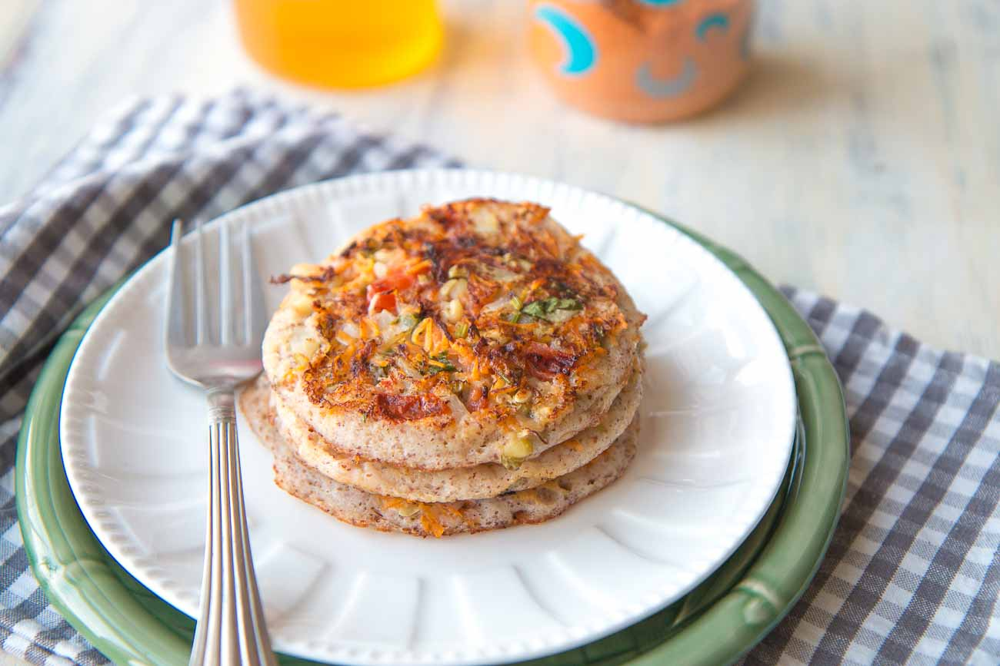
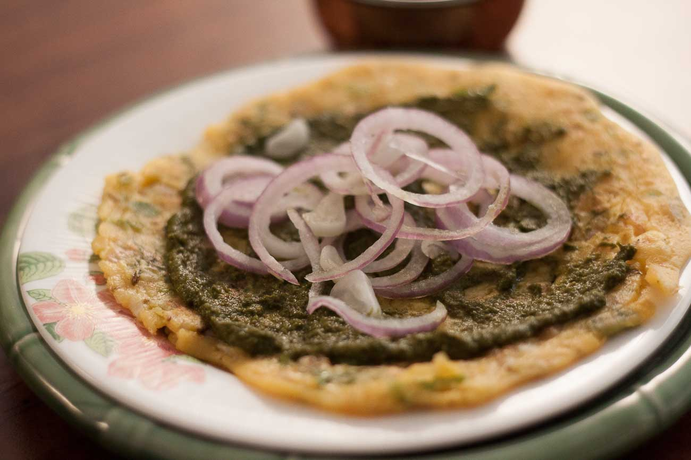
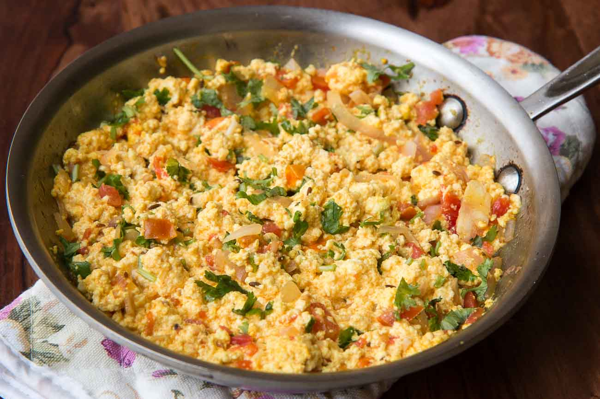
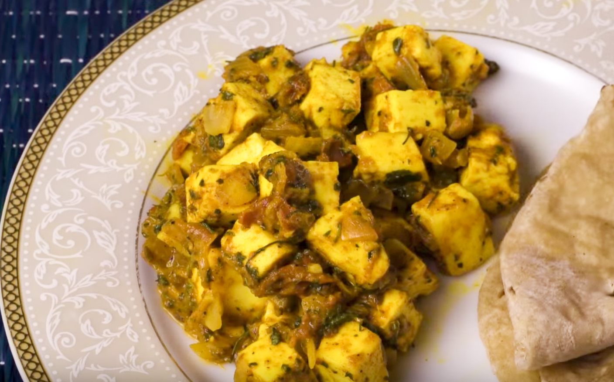
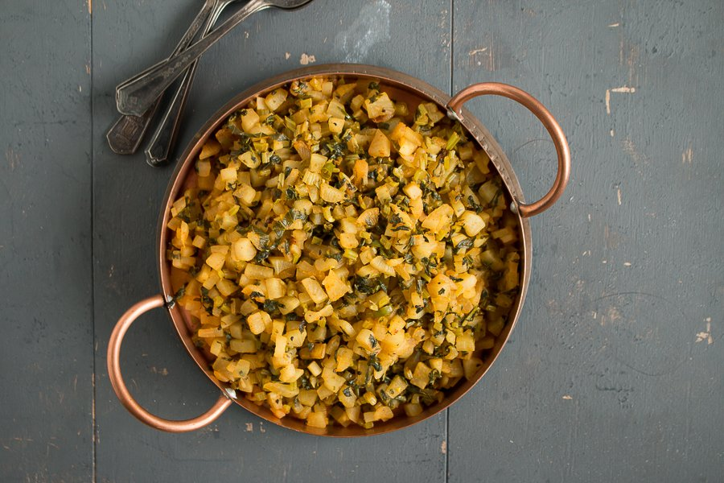
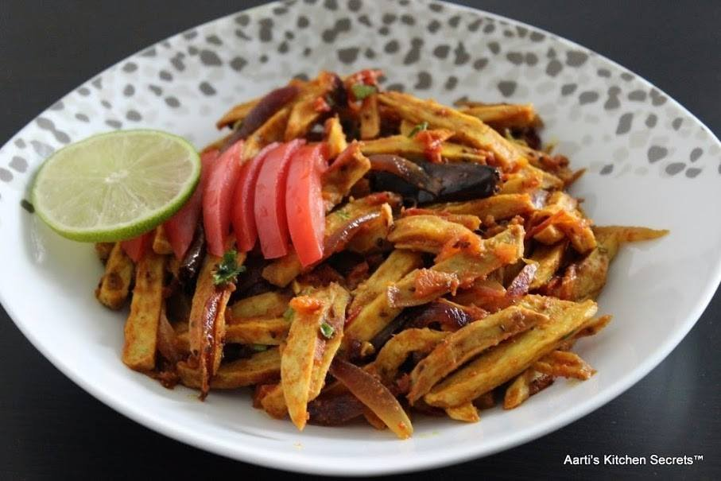

SOME DIABETIC FRIENDLY RECIPIES



Vegetable Ragi & Oats Uttapam Recipe Besan Aur Pyaz Ka Cheela Recipe Paneer Bhurji Recipe With Capsicum



Kasuri Methi Paneer Sabzi Recipe Punjabi Mooli Ki Bhurji Recipe Arbi Tomato Onion Sabzi Recipe